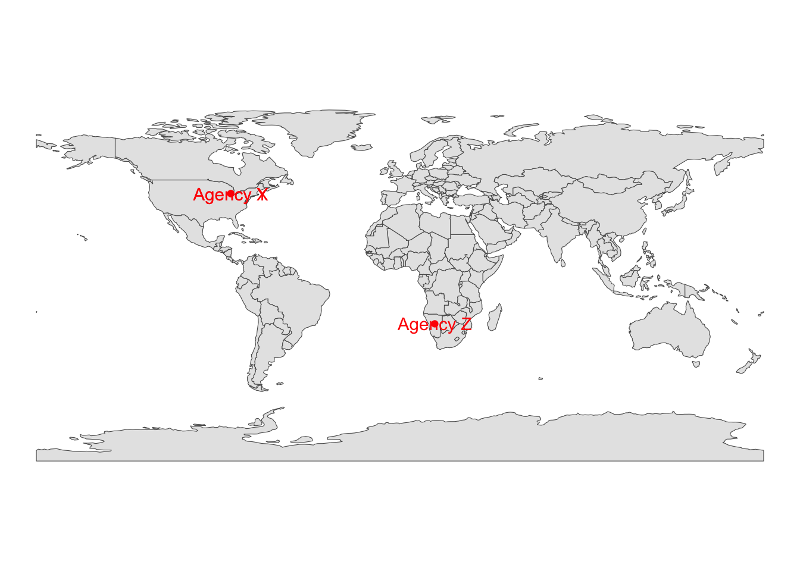

Code
library(tidygeocoder) # geocoding
library(dplyr) # for %>% operator
library(readr) # import CSV
library(ggplot2) # beautiful graphs
library(sf) # simple features
library(rnaturalearth) # map datalibrary(tidygeocoder) # geocoding
library(dplyr) # for %>% operator
library(readr) # import CSV
library(ggplot2) # beautiful graphs
library(sf) # simple features
library(rnaturalearth) # map datasimulated_address_data <- read_csv("simulated-address-data/simulated-address-data.csv")Rows: 3 Columns: 6
── Column specification ────────────────────────────────────────────────────────
Delimiter: ","
chr (4): agency, street, city, state
dbl (2): lat , lon
ℹ Use `spec()` to retrieve the full column specification for this data.
ℹ Specify the column types or set `show_col_types = FALSE` to quiet this message.simulated_address_data # replay# A tibble: 3 × 6
agency `lat ` lon street city state
<chr> <dbl> <dbl> <chr> <chr> <chr>
1 Agency X 42.1 -84.1 123 Main STreet Ann Arbor MI
2 Agency Y NA NA 456 Main Street Ann Arbor MI
3 Agency Z NA NA <NA> <NA> <NA> simulated_address_data$address <- paste(simulated_address_data$street,
", ",
simulated_address_data$city,
", ",
simulated_address_data$state)
simulated_address_data # replay# A tibble: 3 × 7
agency `lat ` lon street city state address
<chr> <dbl> <dbl> <chr> <chr> <chr> <chr>
1 Agency X 42.1 -84.1 123 Main STreet Ann Arbor MI 123 Main STreet , Ann …
2 Agency Y NA NA 456 Main Street Ann Arbor MI 456 Main Street , Ann …
3 Agency Z NA NA <NA> <NA> <NA> NA , NA , NA ArcGIS geocoding has LOW success rate with this data
You will want to find a process with HIGH success rate
You could also try batchgeo -> KML -> Latitude/Longitude
mydata <- simulated_address_data %>%
tidygeocoder::geocode(address,
method = 'arcgis',
lat = latitude,
long = longitude)Passing 3 addresses to the ArcGIS single address geocoderQuery completed in: 1.4 secondsmydata # replay# A tibble: 3 × 9
agency `lat ` lon street city state address latitude longitude
<chr> <dbl> <dbl> <chr> <chr> <chr> <chr> <dbl> <dbl>
1 Agency X 42.1 -84.1 123 Main STreet Ann Ar… MI 123 Ma… 42.3 -83.7
2 Agency Y NA NA 456 Main Street Ann Ar… MI 456 Ma… 42.3 -83.7
3 Agency Z NA NA <NA> <NA> <NA> NA , … -22.1 17.2sf Object While Indicating Coordinate Reference System (CRS)agencies <- st_as_sf(mydata,
coords = c("longitude", "latitude"),
crs = 4269) # A2 is NAD1983By design, this first map is zoomed out to show the errors in geocoding.
ggplot(mydata) +
geom_sf(data=ne_countries()) +
geom_sf(data=agencies, color="red") +
geom_sf_text(data=agencies,
aes(label = agency),
color="red") +
theme_void()Warning in st_point_on_surface.sfc(sf::st_zm(x)): st_point_on_surface may not
give correct results for longitude/latitude data
You could modify the data or the map or both them to zoom in on the particular location of interest.
city_boundary <- read_sf("./shapefiles/AA_City_Boundary/AA_City_Boundary.shp")
WashtenawRoads <- read_sf("./shapefiles/Roads/RoadCenterlines.shp")
AnnArborRoads <- st_crop(WashtenawRoads,
city_boundary) # crop to only get A2 roadsagencies2 <- agencies %>% filter(agency != "Agency Z") ggplot() +
geom_sf(data=AnnArborRoads, color = "lightgrey") +
geom_sf(data = agencies2, color = "red") +
geom_sf_text(data = agencies2, aes(label = agency)) +
theme_minimal()